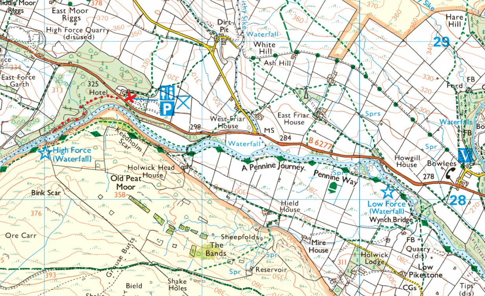
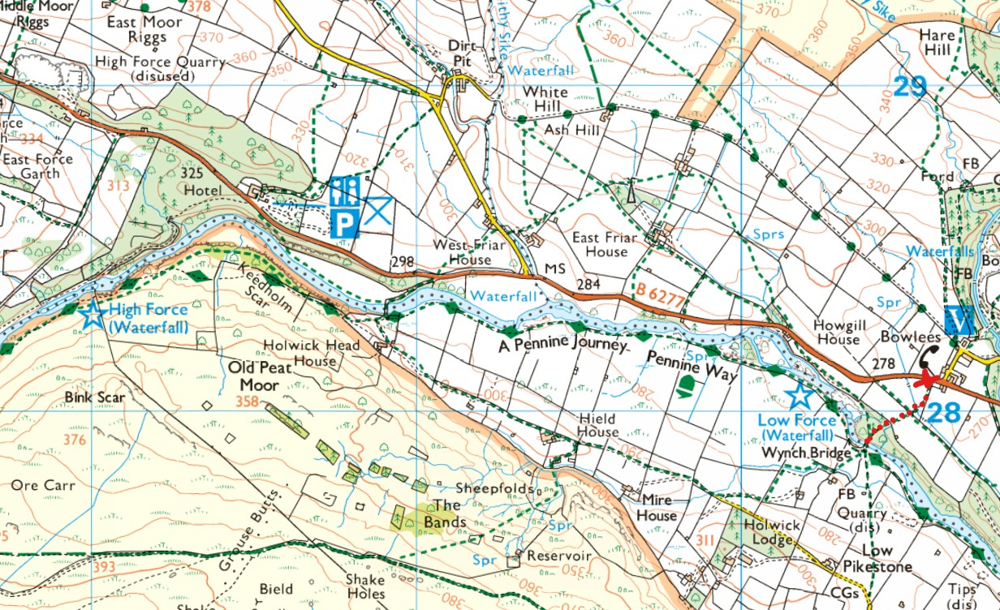
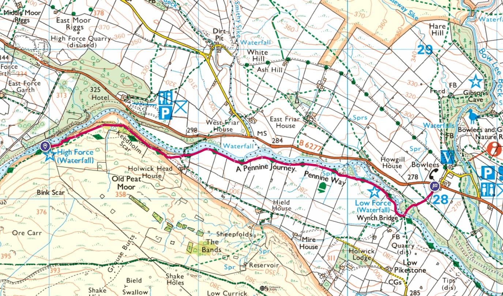

There are two options for parking, sometimes we park at the High Force Hotel which does some great pub food. It is also at the hotels car par where you pay to get tickets to see the High Force waterfall.
The pic below shows the parking location and a dotted line to the High Force viewpoint (ticket required) where the main photo was taken.
{kind=link}

The gravel path from the hotel down to the waterfall.

If you're feeling a bit cheap and don't want to pay for the waterfall or visit the hotal for food, you can park for free near Low Force. See the red cross on the right hand side of the pic below which shows the parking location by the side of the road (B6277).
{kind=link}

As you can see in both maps above, the route between High Force and Low Force simply follows the southern bank of the river. Following the path above from right to left, Low Force to High Force. After leaving the car parked at the side of the road and following the path south through a couple of fields towards some trees.

You'll be able to hear the water as you approach the Low Force bridge .

Cross the bridge and turn right to follow the path along the southern river bank where you'll see Low Force.

Along the way you'll see some stone carvings and lots of views of the river with small waterfalls and white water.


This is the view of Highforce as you approach it.

If following the map route from right to left you will finish at the top of High Force on the other side of the river to the vew point route shown earlier on this page.